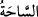

175. Onların halini gör, onlar da görecekler.
Savaş ve cihattan sonra ölüm ve esaretle “Onların” başlarına gelen korkunç ve kötü
“halini gör” o zaman “onlar da” neler olacağını “görecekler.”
Onlara bu hali göstermekten maksat, bu durumun gayet yakın olup sanki kişinin hemen
görebileceği gibi önünde olduğunu bildirmek içindir. Yoksa emir verildiği zaman
görülecek şey hazır değildir. et-Te’vîlâtü’n-Necmiyye’de der ki: “Sen onların hallerini
gör; onlar da hayır yahut şer yaptıklarının karşılığını görecekler.”
Burada “
” kelimesi hâdisenin vukuunu uzaklaştırmak için değil, tövbe ve iman
etmeleri için tehdit ve uyarı mahiyetindedir. Çünkü tehlikeli olup sakındırılan şeyin uzak
görülmesi tehdit ve uyarı ifadesiyle çelişir. “onlar da görecekler” âyeti nazil olunca
çok câhil oldukları için alaylı bir ifadeyle “Bu ne zaman?” diye sordular. Cevap olarak
şu âyet nazil oldu:
176. Azâbımızı acele mi istiyorlar?
Bu kadar tekrar eden tehditlerden sonra “Azâbımızı acele mi istiyorlar?”
Yani “Bu garip ve ilginç durumdan hayret ediniz” demektir. Mânâsı şudur: “Bizim
azabımızın çabuk gelmesini mi istiyorlar ve onun geleceği vakti mi soruyorlar?”
Tevrat’ta der ki, onlar bana mı aldanıyor. Yahut bana karşı cür’et ve cesaret mi
gösteriyorlar. Yâni benim mühlet vermem ve onları bırakmam ile mi aldanıyorlar, yoksa
bana yiğitlik mi taslıyorlar ve korkmuyorlar mı?
177. Azap yurtlarına indiğinde, uyarılanların (fakat yola gelmeyenlerin) sabahı ne
kötü olur!
“Azap yurtlarına indiğinde, uyarılanların (fakat yola gelmeyenlerin) sabahı ne kötü
olur!”
el-Müfredat’ta der ki: “
” geniş mekan demektir. “
” yani evin sahası sözü
de buradan gelir. İbn Şeyh Hâşiye’sinde der ki: “
”, binasız boş alan demektir. “
” ise evin avlusu ve evin çevresinde uzanan yine evin maslahatları için
hazırlanmış olan yer demektir. Mânâ şöyledir: Sanki azap, ansızın onların sahasına,
etrafına yerleşip onlara baskın yaparak onları hezimet ve yenilgiye uğratacak olan bir